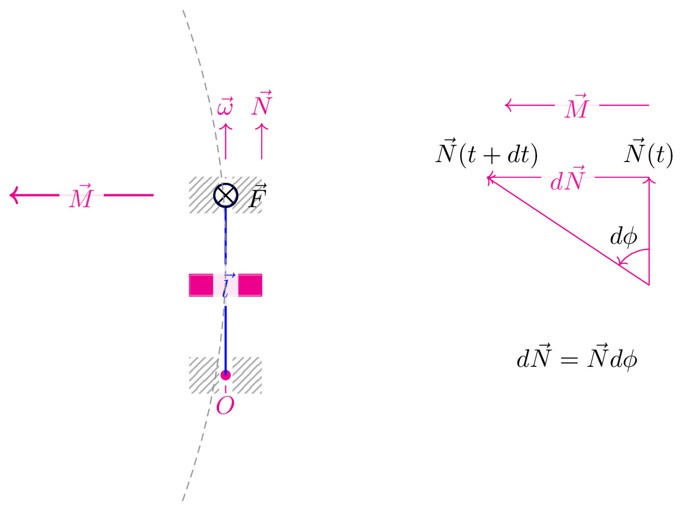

pre.tex
\documentclass[tikz]{standalone}\input{pre.tex}\begin{document}\begin{tikzpicture}
\matrix[column sep=2cm] {
\draw[interface] (-0.5,1) rectangle (-0.1,1.5) (0.1,1.5) rectangle (0.5,1);
\draw[interface] (-0.5,-1) rectangle (-0.1,-1.5) (0.1,-1.5) rectangle (0.5,-1);
\draw[axis,magenta] (0,-1.5) -- (0,1.5);
\draw[magenta,->]
(0,1.75) -- ++(0,0.5)
node[above] {$\vec\omega$};
\draw[magenta,->] (0.5,1.75) -- ++ (0,0.5)
node[above] {$\vec{N}$}
;
\draw[fill=magenta, magenta] (-0.5,-0.15) rectangle (0.5,0.15);
\fill[magenta] (0,-1.25) coordinate (1) circle (2pt) node[below, yshift=-0.5em] {$O$};
\fill[magenta] (0,1.25) coordinate (2) circle (2pt);
\draw[->, thick, blue] (1) -- node[caption] {$\vec{l}$} (2);
\draw[->, thick, magenta] (2)++(-1,0) -- node[caption] {$\vec{M}$} ++(-2,0);
\draw[fill=white, draw=blue] (0,1.25) circle (4.3pt) node {$\bigotimes$} node[right, xshift=0.5em] {$\vec{F}$};
\draw[axis] (-0.6,-3) arc (-20:20:10);
% &
&
\begin{scope}
\draw[magenta,->] (0,0) coordinate (o) -- ++ (0,1.5) coordinate (i)
node[above, black] {$\vec{N}(t)$};
\draw[magenta,->] (0,0) -- ++ (-2.25,1.5) coordinate (ii)
node[above, black] {$\vec{N}(t+dt)$};
\draw[magenta,->] (i) --node[caption] {$d\vec{N}$} (ii);
\draw[magenta,->] (i)++(0,1) --node[caption] {$\vec{M}$} ++(-2,0);
\draw pic["$d\phi$",draw=magenta,->,angle eccentricity=1.5,angle radius=0.5cm] {angle=i--o--ii};
\draw (-1,-1) node {$d\vec{N}=\vec{N}d\phi$};
\end{scope}
\\
};
\end{tikzpicture}\end{document}